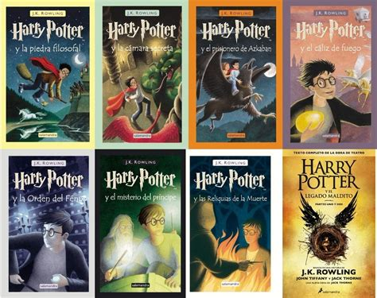

ORDRE DELS LLIBRES
- Harry Potter i la pedra filosofal (1997)
- Harry Potter i la cambra secreta (1998)
- Harry Potter i el pres d'Azkaban (1999)
- Harry Potter i el calze de foc (2000)
- Harry Potter i l'orde del Fènix (2003)
- Harry Potter i el misteri del príncep (2005)
- Harry Potter i les relíquies de la Mort (2007)

Sinopsis dels llibres
1. Harry Potter i la pedra filosofal: Harry descobrix que és mag, comença a estudiar a Hogwarts i s'enfronta per primera vegada a Voldemort, que vol aconseguir la pedra filosofal.
2. Harry Potter i la cambra secreta: Durant el segon any a Hogwarts, Harry investiga uns misteriosos atacs contra els alumnes i descobrix nous secrets sobre el passat de Voldemort.
3. Harry Potter i el pres d'Azkaban: Harry coneix Sirius Black i Remus Llopin, i descobrix informació important sobre els seus pares. És l'únic llibre de la saga en què Voldemort no apareix directament.
4. Harry Potter i el calze de foc: Harry participa inesperadament en el Torneig dels Tres Bruixots, que acaba amb la mort de Cedric Diggory i el retorn de Voldemort.
5. Harry Potter i l'orde del Fènix: Harry ha de fer front al retorn de Voldemort, mentre el món màgic es nega a creure'l. També descobrix una profecia relacionada amb el seu destí.
6. Harry Potter i el misteri del Príncep: Harry aprén més sobre el passat de Voldemort i els horricreus, uns objectes essencials per a comprendre com derrotar-lo. El llibre acaba amb la mort de Dumbledore.
7. Harry Potter i les relíquies de la Mort: Harry, Ron i Hermione abandonen Hogwarts per a buscar els horricreus restants. La història culmina amb la batalla de Hogwarts i l'enfrontament definitiu entre Harry i Voldemort.
Enllaç
A través d'aquest enllaç es pot accedir a una pàgina web amb tota la informació detallada sobre la saga de llibres Harry Potter.
Vés a ordre de llibres